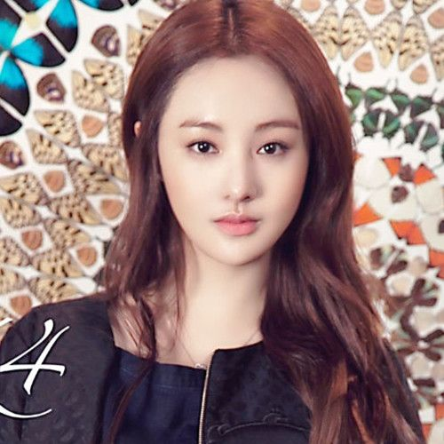

相关人员：

- 
- 郑爽
李钟硕
韩国演员 模特
所属类别：男神 国民男友 刘慧敏的
李钟硕韩国著名演员，从《流行花园》开始被外界所熟知，后来的《听见你的声音》更是人气飙升
到《doctor异乡人》一举拿下最受喜爱的演员 到《匹诺曹》更是大火一把，成为
韩国的新星 到备受关注的《翡翠恋人》可见他的影响力不容小逊。我们期待他更多精彩的作品！
2016年因为《匹诺曹》和刘慧敏相识，后来更是成为好朋友，
相传刘慧敏曾喜欢他，但李钟硕只是把她但做朋友。希望两位一切都好。
爱尚新闻报道李钟硕 老刘提供报道 联系2035664 360协助 团队合作快乐 第一次做 刘洁你是猪吗 神经病
韩国男星李钟硕在渝受任韩国文化季推广大使 李钟硕韩孝珠确定共同出演MBC水木剧《W》 李钟硕《翡翠恋人》演海归 驰骋黑白两道 全智贤首获总统表彰奖 JYJ获国务总理表彰